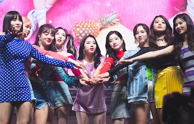

Who is TWICE?

TWICE is a 3rd generation K-POP girl group that consists of 9 girls. Im Nayeon, Yoo Jeongyeon, Hirai Momo, Minatozaki Sana, Park Jihyo, Myoi Mina, Kim Dahyun, Park Chaeyoung, Chou Tzuyu (oldest to youngest). They were formed under JYP Entertainment through the survival show Sixteen. Debuting in late 2015 with their album The Story Begins, they rose to become one of the most popular K-POP groups in the world with their fandom, Once.
I become a Once around 2019 when I was first introduced to the whole K-POP genre. The first song that got me into them is What is Love? I listened to only a few of their songs then until Tonga's COVID era came in 2022 after the volcanic eruption that caused the internet to go out for a whole month. During that whole month all I listened to was TWICE's music, and since then I've been obsessed.